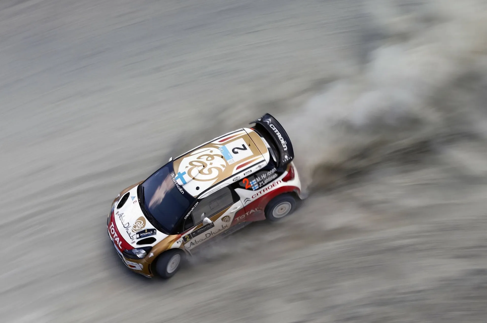
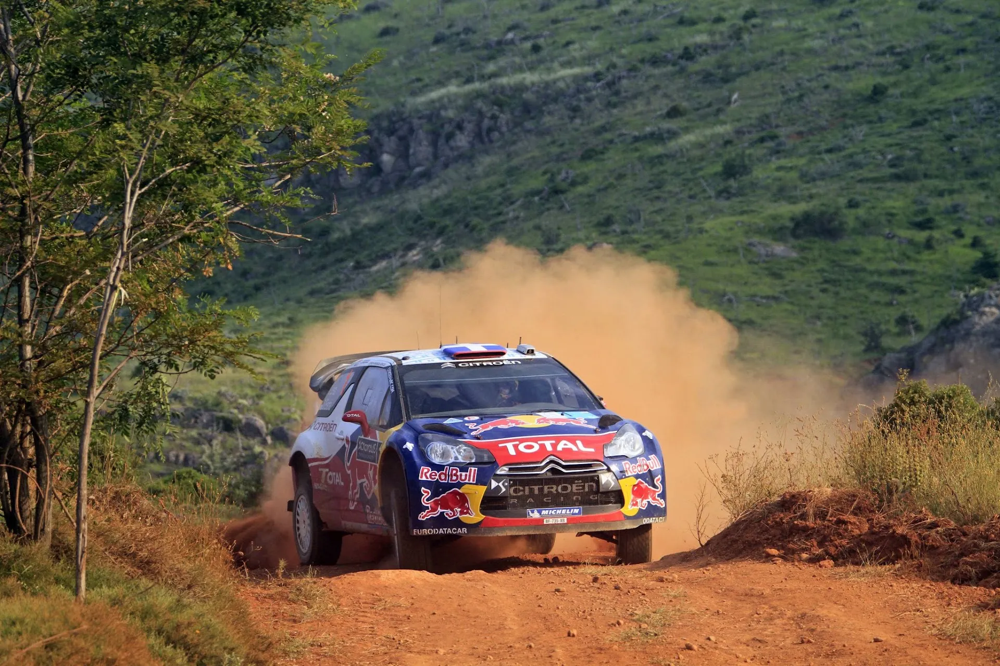
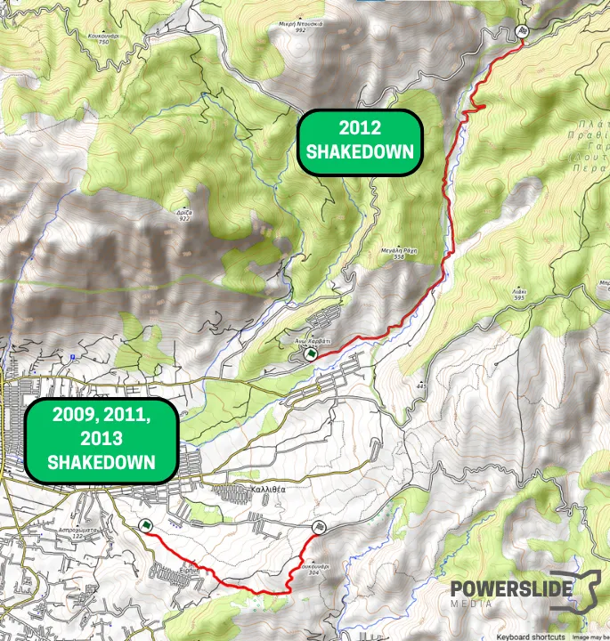
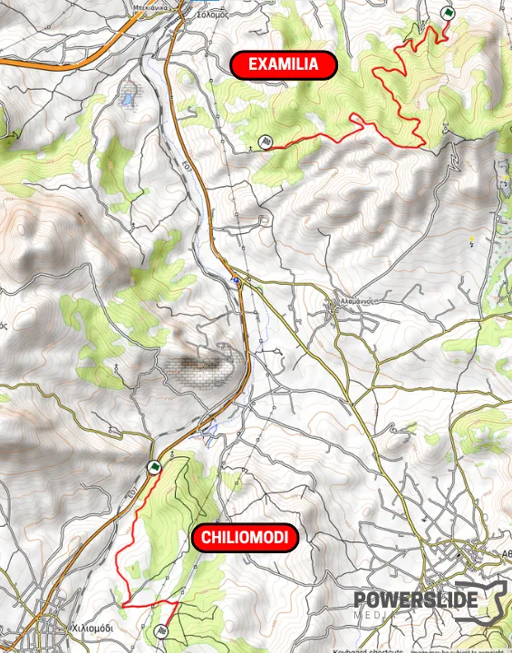
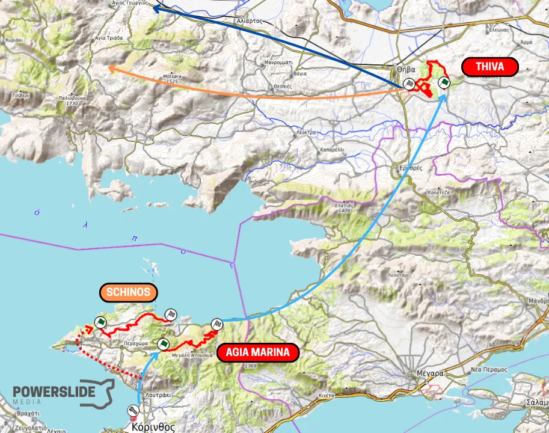
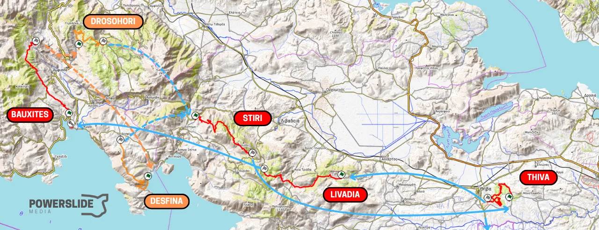
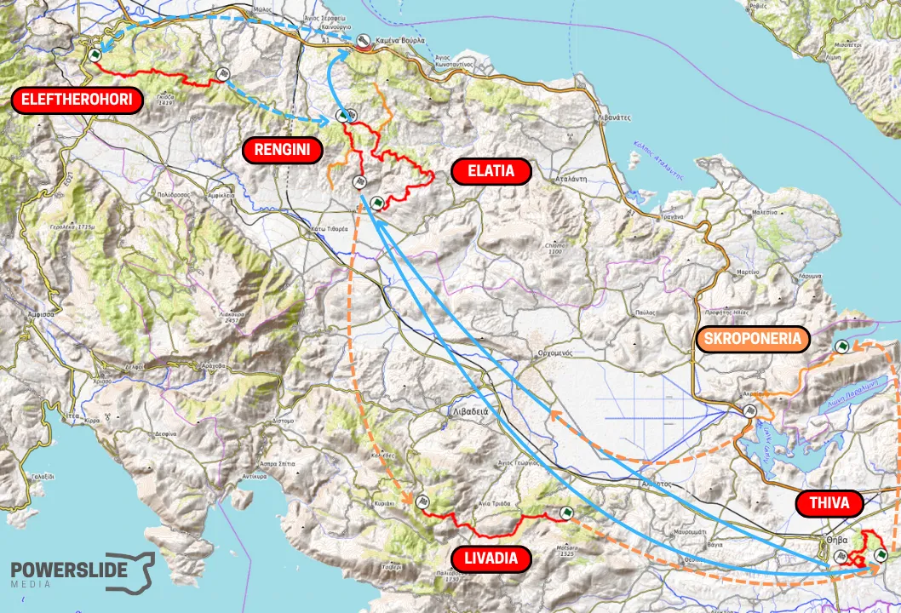
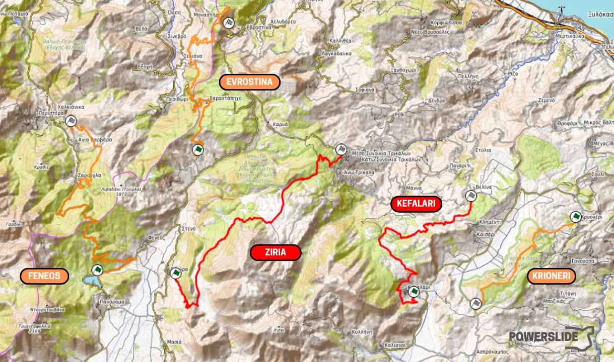
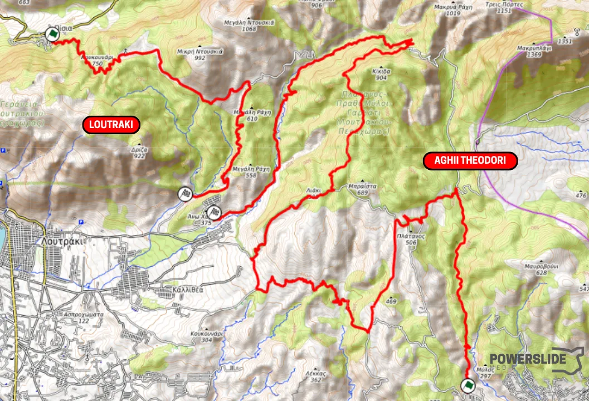

Acropolis Rally back in Loutraki; What can we expect for 2026?
The 70th EKO Acropolis Rally will be based in Loutraki, as announced today by the event organizers. Moving the rally 's HQ to the Peloponnese was a move of necessity, as the Lamia Expo would not be available for 2026.
What does this move mean? In short, a large part of the rally's route will be new compared to what we saw from 2021 to 2025. This does not mean that next year's rally will be like the one from 2013, where special stages in Loutraki were used up to three and four times. So let's take a look at what might be on the 2026 itinerary, as well as what the organizers' options are.

The Acropolis Rally returns to Loutraki for 2026
GEPA pictures / Red Bull Content Pool
Please note: It is important to be familiar with FIA regulations when discussing rally itineraries. The maximum number of kilometers per loop is 80 (i.e., on a day consisting of two stages, the maximum is 160 kilometers), and the maximum number of special stages in a loop is four, excluding super special stages. Furthermore, the WRC Promoter prefers the number of one-pass stages to a minimum, as they need to move equipment and personnel to cover the rally in each of them, which means higher costs. In the past, SS Dafni was "cut" from the itinerary because of this.
Thursday
After recce, Thursday is the first day of action. In the day's programme the Shakedown and the Ceremonial Start must be included. During the four years that Acropolis was based in Loutraki in the WRC, two different Shakedowns were used. One was in Kallithea, and was used in 2009, 2011, and 2013. In 2012, a 6-kilometer section starting from Ano Harvati was used as the Shakedown. It is not likely that this will be the Shakedown in 2026, as it will most likely be part of a special stage. This year, it was part of the Agioi Theodoroi stage, in the opposite direction.

Map with the two different Shakedowns used when the rally was based in Loutraki
The special stage in Kallithea has suffered damage from fires since then, with the second half having many burnt trees and shrubbery. Nevertheless, it is still an option. Several drivers have tested on this stage before the rally, with Thierry Neuville being the most recent example, from this year.
Neuville at the old Shakedown stage this year
Another option for Shakedown would be to use something further from Loutraki, in the Peloponnese. Having a Shakedown with remote service is not something new, as it has been done recently in some rallies (e.g., Safari, Central Europe). A route in Examilia (an old stage in the Rally Korinthou) or in Chiliomodi could be options.
As for the start, there are two options. Either at the Corinth Canal, like 2009, or in Athens. Logically, the start will be combined with a super special stage, so the Athens scenario seems more likely.

Map with possible Shakedown routes in Chiliomodi and Examilia
Friday
For Friday and the first full day of the Acropolis Rally, there are two directions that the organizers can take. I believe the rally will start from Loutraki and move towards mainland Greece, reaching Fokida or Fthiotida. A repeat of 2013 seems unlikely.
In 2009 and 2012, the rally went as north as Itea, making use of the Remote Service regulations. Similarly, in 2011, it reached Fthiotida with a Remote Service in Kamena Vourla. I believe we will see something similar in 2026, with crews starting from Loutraki in the morning and after special stages in Viotia, reaching either Fokida or Fthiotida. Let's examine each case:
In both cases, the day would start from Loutraki. There is certainly a possibility that the organizers could choose a special stage in the area, the finish of which being on the road to Alepochori, in order to reduce the liaison distance. This was the case in 2009 and 2012, with Harvati and Agia Marina finishing near Vamvakies. Another possibility is to use a special stage on roads in the area near Lake Vouliagmeni and Schinos. I believe that Thiva will definitely be included in the rally's itinerary, as a repeated stage even, as it "halves" the distance from Loutraki to Fokida/Fthiotida.

The start of the morning loop: a potential first stage in Loutraki, and then Thiva. After that the rally could head to Fokida or Fthiotida.
After Thiva, that's where things change. If the rally is heading towards Fokida, then the crews would head on some other special stage in Viotia (e.g. Livadia or Steiri) and then arrive in Itea for service.
It seems logical for itinerary to then include the Bauxites stage, combined with a stage in Parnassos, or something towards Desfina, before a second pass or a second special stage in Viotia. After that, I believe that Thiva will be the last special stage of the day before returning to Loutraki.
An interesting option would be a special stage at the wind turbines south of Desfina.

How Friday could look like with a remote service in Itea
If the rally moves towards Fthiotida, then it is very likely that after Thiva there will be a special stage in the Elatia area, with remote service in Kamena Vourla or Thermopylae following. From there on, nearby special stages is Eleftherochori, or perhaps even a special stage in Oiti, finishing near Pavliani. Of course, it may be decided that the race will not go beyond Elatia, and a second stage area (e.g., Regini) will be used after service, followed by Stiri and finally Thiva, before returning to the service park.
Of course, a special stage could also be used in Skroponeria between Thivas and Elaia, using parts of the Akraifnio special stage that is also used in the Greek Championship. Just with a different start, and without any other... useless parts.

A potential Friday map with a remote service in Kamena Vourla
Saturday
Saturday of the Acropolis Rally will most likely be held entirely in the Peloponnese. The biggest question mark is the condition of the special stages in Corinth and Argolis. The special stages in Argolis, Klenia, and Gymno have remained unused for almost ten years now. The first half of the Klenia special stage was last used in 2018 in Rally Mavro Rodo, while Gymno has not been used since the 2013 Acropolis Rally.
Given how car breaking and rough these stages were, especially Gymno, I don't know in what condition they are in today and whether they can be used.
Onboard from SS Gymno from 2011, a real car-breaker
On the contrary, Kefalari and Ziria have been used for pre-event testing recently, so it is safe to assume that these two have a higher chance of being on the 2026 itinerary. To complete the day, one more (at least) repeated stage will be needed. So what are the options?
One solution would be to use a special stage in Loutraki and then have the crews go to the Peloponnese for Kefalari and Ziria. I think this is perhaps the most "boring" scenario, as it may mean that some small sections have 3 or 4 passes. There is also Chiliomodi, but I don't think it's suitable or good enough for Acropolis. Same goes for Athikia.
Otherwise, we can look for special stages close to the other two. Before Kefalari, there is Kryoneri, which was used in the past in Rally Korinthou, but parts of it have since been paved, and the length of a stage I was able to map was only close to 11 kilometers. West of SS Ziria, there are two possible special stages that I have found, one on Mount Helmos and the other on the slopes of Mount Kyllini.
The first starts near Lake Doxa and then climbs the mountain, passing through the Zarouchla Forest with technical sections and hairpins. It then descends after passing through the village with the same name and finally climbs before the finish.
The latter starts from Ano Tarsos and climbs uphill with several hairpin bends. After passing through Sarantapiho, it has a nice section with elevation changes, and afterwards it goes downhill. Before the finish in Evrostina, the special stage climbs again, reaching a plateau. Then it descends until the finish, on a narrow road.
It is worth noting that the routes I have marked are simply indicative. There are several roads in each area, and anyone can create different routes of varying lengths, depending on their needs.

Ziria, Kefalari and three other potential stages
Sunday
Things are much simpler for Sunday. Either two repeated special stages in Loutraki or a 30+ kilometer pass and two from the Power Stage make the most sense.
As there are many different possible configurations for any pair of special stages selected, I don't think it needs to be analyzed any further; it will be something we have seen in recent years on Friday in the morning loop, or at least something similar.

A potential Sunday map. One pass through a 30km Aghii Theodori stage and then two passes of Loutraki
Since there are likely to beshort liaisons, it would not be a bad idea to do what was done at this year's Rally Sardinia, where the format was not two special stages and then service, with then the last two special stages. Instead there were two, the second pass of the first, and then only the Power Stage after the service. This also skipped the regrouping before the Power Stage.
Conclusion
I believe that as long as Remote Services are used, moving the rally to Loutraki for 2026 is not the end of the world. Indeed, the race will unfortunately lose the opportunity to visit some of the most historical special stages, such as Tarzan and Pavliani, but it gives the organizers the opportunity to "rest" them for future years, and they will also have the opportunity to experiment with new and old special stages.
McKlein / Red Bull Content Pool
I am looking forward to Rally Guide 1 in February, which will feature the route with perhaps the most question marks after that of 2021, and I am eagerly waiting to see what route the people at Motorsport Greece will come up with.

Follow us here!